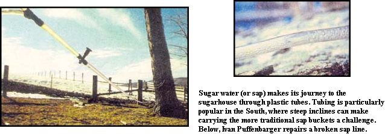
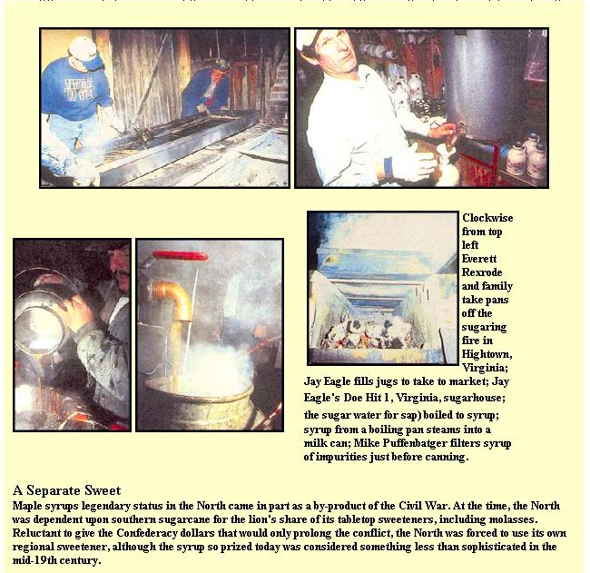

"A fellow here talking to fellows up there-well, they could be in an awful argument real fast," says Mike Puffenbarger.
He carefully monitors maple syrup boiling inside the Southern Most Maple sugarhouse and details word scrambling between Virginia and Vermont syrup makers. The stuff boiling in his pan is sugar water. A north erner would say it's sap.
"Here, if you call it sap, they think it's gone bad. Up North, it's called 'buddy' when it goes bad," he says. Spurred by spring, a chemical change in the liquid primes buds to bloom and renders the sugar water-or sap, if you're in the North-useless for making syrup.
Tming is also a geographic trick of the trade. Southerners open or "tap" trees (drill holes and insert spiles or taps) in January or February, while many northerners have to wait until early March.
Northern trees leak, while southern trees run. "If you say the trees are leaking, we go check our lines," says Puffenbarger, referring to plastic tubing strung between trees to siphon sap and transport it downhill to large collection barrels or tubs. Eliminating the need for buckets, such tubing is a time and labor saver in the North, a virtual necessity in the South.
Peter 0'Shaughnssy missed gathering buckets of maple sap in the Berkshire Mountains after moving to Virginia. He soon found himself tapping maples set farther apart, and on much more precipitous terrain, than he'd seen back home. The Massachusetts native quickly abandoned the notion of collecting sap in buckets, thereby sidestepping the challenge of carrying full ones down sheer slopes.
"Here it is steep and I got tubing right away,' says 0'Shaughnssy. "I Just love to watch it come down those tubes."
Jim White, another northern transplant, also makes syrup on Virginia inclines so steep he faces tree roots while standing upright. "You don't have a choice but to use tubes in some areas-it's too steep and buckets require higher labor," remarks White.
Still, many southern syrup makers continue to use buckets where the land permits. Buckets collect occasional foreign matter and water through evaporation, while sealed tubing doesn't. Puffenbarger for one likes the resulting flavor variation; he hangs buckets on 800 of the 4,000 holes he taps each season to enhance the final product. He also avoids influencing flavor with commercial tube cleaners. Unless a problem develops, he flushes his lines with spring water.
Puffenbarger, who continues a family maple syrup tradition after more generations than he can recall, recommends bucket coversoften missing in southern orchards-and one tap, not two per-bucket, as commonly seen in his area. "You can get as much from one tap as two. With two holes, it runs ant faster, but plays out quicker and is harder on the trees," he stresses. Southern maple orchards commonly share ground with livestock, while northern orchards rarely do. Producers with livestock must make tree and tube location maps, then remove and store the lines-a real labor drain.
Butwhat finally is the real difference between northern and southern syrup making? Scientifically, there is none. Where maple trees grow, if the ground freezes at night and thaws in the day during late winter, it's maple syrup country... North or South.
|
 |
 |
|